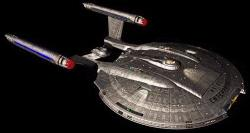
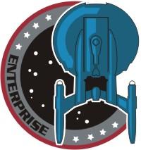

|
|
Flotta Stellare - Enterprise NX-01 |
|
|||
|  | |||
|  |
Classe: NX.
Matricola: NX-01.
Varata il 13 aprile 2151, dopo
32 anni di ricerca presso il Warp Five Complex, primo vascello a lungo raggio
costruito dai terrestri.
Nel 2154 sono state integrate
alcune tecnologie aliene nella nave (E2).
Dimensioni e carico
Dimensioni: 190 metri di larghezza, 230 metri di lunghezza.
Dislocamento: 80.000 tonnellate.
Equipaggio: 83 (Silent Enemy e
Oasis) composto da due alieni (T'Pol
e Phlox) e il resto umani di cui un
terzo donne.
Propulsione
Motore a curvatura con velocità massima warp 5,5 (Cogenitor). Tra gli sviluppatori di questo propulsore figurano anche
Zefram Cochrane e
Henry Archer.
Motori ad impulso.
Ha 5 iniettori di plasma e può anche viaggiare con 4, ma è sconsigliabile
viaggiare con 3 (A Night in Sickbay).
Può viaggiare con 3 iniettori di antimateria in meno, ma perderne 4 è un
problema (The Expanse).
Il plasma di curvatura deve raggiungere i 3000 gradi per avere una combustione (Dead
Stop).
La scorta di antimateria è stoccata in contenitori trasportabili; il reattore
principale può contenere abbastanza antimateria per un mese di operatività (Anomaly).
Grazie alle tecnologie aliene integrate nel
2154, la nave è in grado di
raggiungere curvatura 5,6 per brevi periodi e di superare curvatura 6, ma con un
22% di probabilità di esplodere (E2).
Gondole di curvatura (The Catwalk)
Sono schermate pesantemente e sono formate di una lega di osmio, con una densità
di almeno 20000 parti per micron, che può bastare per proteggere l'equipaggio
dalle radiazioni di una
tempesta neutronica
di classe 5.
È possibile reindirizzare sulle console presenti all'interno delle gondole i
comandi tecnici e di navigazione dell'intera nave.
È possibile chiudere il flusso di antimateria verso le gondole agendo sui
regolatori di flusso manuali presenti all'incrocio 42 alfa, poi agendo sui
sequenzatori del dilitio, spegnendo così il motore.
Comunicazioni
Le comunicazioni a lungo raggio con la Terra sono rese possibili da una serie di
amplificatori subspaziali conosciuti come Echo One, Echo Two, Echo Three, ecc.
Il sistema di comunicazione interna consente di trasferire una chiamata verso il
comunicatore personale (Horizon). Le comunicazioni all'interno della nave sono possibili tramite
pannelli posti sulle pareti. Le squadre da sbarco portano con sé dei
comunicatori con integrato un prototipo di traduttore universale.
Computer
È il più avanzato della Flotta Stellare, occupa tre ponti (Dead
Stop) ed è in grado di interpretare alcuni comandi vocali.
Teletrasporto
Certificato anche per il trasporto di esseri
viventi (Broken Bow) e privo di biofiltro. Ha un raggio di azione di 10.000 chilometri (Rajiin).
Dispositivo di traino
Cavo di traino di 1000 metri di lunghezza operativa.
Difese
Scafo in duranio (The Xindi) corazzato polarizzato, nessun sistema di scudi a campi di energia.
Armi
Tre prototipi di cannoni a fase con emettitore multifasico
con una potenza massima di 500 GW installati in torrette retrattili. Cannoni
laser e siluri spaziali.
Veicoli ausiliari
Due Shuttlepod (Pod-1 e Pod-2).
In caso di emergenza, la nave è equipaggiata con diversi pod di salvataggio, che
raggiungono una velocità massima di 300 km/h (Shuttlepod
One).
Le navette vengono lanciate utilizzando un sistema di aggancio magnetico
attraverso grossi portelloni posti sulla parte ventrale del disco.
Servizi vari di bordo
La sala mensa può essere attrezzata come sala cinema (Impulse) di trenta posti circa con oltre 50.000 film disponibili tra cui
Night of the killer Androids (Cold Front),
For Whom the Bell Tolls, Sunset Boulevard (Dear
Doctor), Frankenstein, Bride of Frankenstein e Son of Frankenstein
(Horizon), The Day the Earth Stood Still (The Catwalk), The Black Cat
(Stigma).
La cucina della nave dispone di cibo vero, però è dotata anche di un
risequenziatore di proteine (Fight or Flight) che può replicare un limitato menu di piatti base,
tra cui la pasta.
È disponibile una piccola palestra con un tapis roulant per fare corsa sul posto
(A Night in Sickbay).
Varie
Gli isotopi di selenio interferiscono con i sensori della nave e con i motori
delle navette, ma non con il teletrasporto (Dawn).
Nel condotto di manutenzione C alla congiunzione 12 ci sono i regolatori del
plasma dei motori warp (Regeneration).
Le camere di decompressione della nave hanno un ritmo di decompressione nominale
di 0,5 atmosfere al minuto (Anomaly).
L'override del blocco delle porte degli alloggi avviene attraverso un sistema
biometrico di riconoscimento dell'impronta digitale (Rajiin).
Nel giugno 2153 un'area
adibita a magazzino è stata riconvertita in un centro di comando attrezzato
appositamente per gestire la situazione con gli
Xindi (The Xindi).
L'infermeria è la sezione più isolata dagli agenti esterni della nave (The Catwalk).
Disposizione dei servizi a bordo
Ponte A: plancia, ufficio del capitano, sala tattica (direttamente dietro la
plancia);
Ponte B: alloggi dell'equipaggio, sistemi di distribuzione dell'energia, rete
dei sensori, serbatoi di deuterio alloggio di Tucker (Cogenitor);
Ponte C: soppalco sala motori principale, condotti di trasferimento
dell'energia, sala di osservazione, alloggio di T'Pol (Bounty)
sulla parte sinistra (Gravity), palestra (Vanishing Point);
Ponte D: sala macchine, alloggi ufficiali giovani e truppa, sala di
osservazione, teletrasporto, alloggi degli ufficiali, sala decontaminazione (Bounty),
stiva 2 (Vox Sola) ;
Ponte E: sala macchine, deflettore principale, alloggio del capitano, sala
mensa (convertibile in sala cinema), alloggi degli ufficiali anziani, infermeria, hangar, laboratorio
scientifico, portelli di attracco (Bounty);
Ponte F: camere di lancio dei siluri (babordo e tribordo), armeria, sala di
osservazione, porte di lancio degli shuttlepod, serbatoi dell'antimateria;
Ponte G: sistemi informatici, sensori.
Due mezzi ponti, inseriti tra il Ponte D e il Ponte E e tra il Ponte E e il
Ponte F, ospitano i condotti del plasma ed i tunnel di accesso.
|